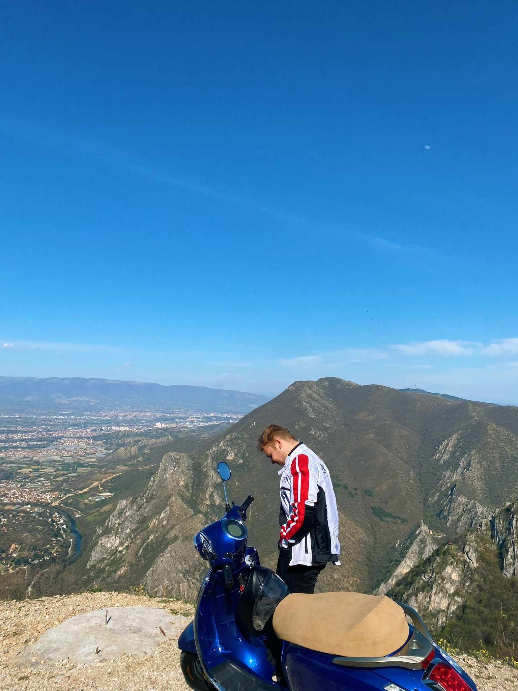

Здраво, јас сум Мартин Ѓорѓиоски студент на Факултет за информатички науки и компјутерско инженерство како што беше наведено и погоре .Живеам во гланиот град на Македонија, Скопје. Моето средно образование го завршив во СУГС "Никола Карев". Во моето слободно време обозавам да се дружам со моите другари као и возење на мотор кола и се што може да ми приусшти добар звук доволно адреналин и забава. Секако и посветувам доста време на учење програмирање како и на други предмети, но се приметува дека јака страна не ми е веб дизајнот но се трудам да се подобрам.
